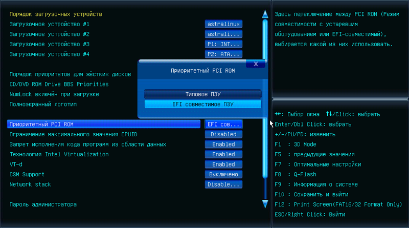
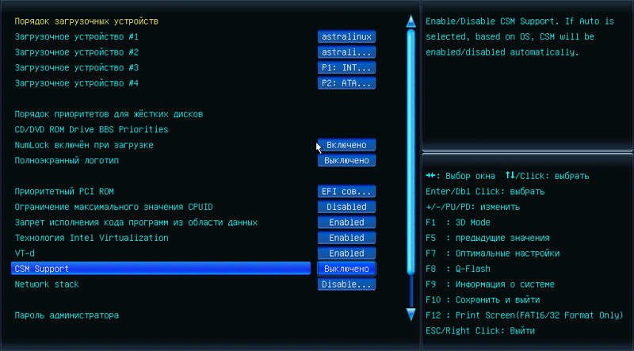
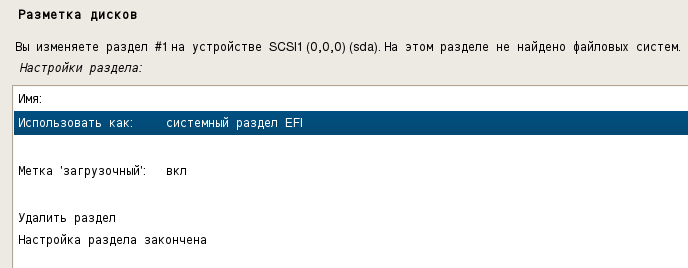
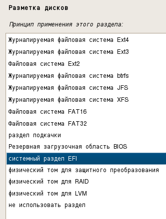

При установке Astra Linux на машину, поддерживающую UEFI, установщик автоматически определяет наличие UEFI и автоматически создает диалоги настройки нужного загрузочного раздела.
Примечание: косвенным признаком того, какой режим (BIOS или UEFI) определен при установке, является картинка задника на экране загрузки инсталлятора. Для BIOS и UEFI они разные (надо найти скриншоты).
Настройки, производимые в BIOS материнской платы
Для того чтобы установщик распознал раздел под EFI, предварительно нужно переключить опцию в BIOS на «EFI совместимое ПЗУ»:

Для того, чтобы система не пыталась загружаться в режиме BIOS-загрузки, на которую UEFI может переключиться при наличии модуля совместимости CSM (Compatibility Support Module), необходимо перевести опцию «CSM support» в положение «Выключено/Disable»:

Если эту настройки не изменить, то загрузчик Astra Linux будет пытаться загрузиться в BIOS-режиме, а модуль CSM ему позволит это сделать. И после такой загрузки инсталлятор будет считать, что он загрузился в BIOS-режиме, а UEFI в системе нет. И, соответственно, инсталлятор не будет показывать нужные опции, необходимые для правильного конфигурирования в UEFI режиме.
Настройки, производимые в установщике ОС Astra
В окне настройки «Разметка диска» для первого созданного раздела выбрать опцию «системный раздел EFI». В качестве файловой системы для этого раздела используется тип FAT32.


Далее необходимо создать раздел под корневой linux-каталог "/". Файловая система для такого раздела, традиционно выбирается как EXT4.
Далее установка системы производится точно так же как в стандартном BIOS-режиме.